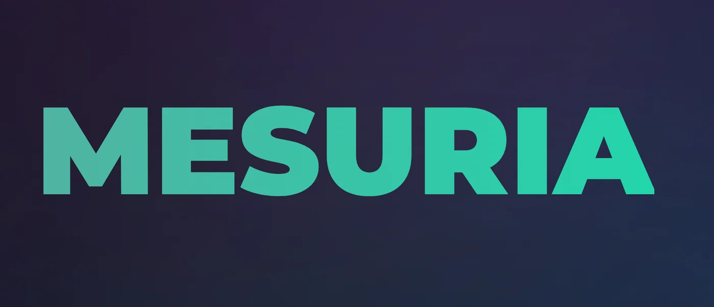
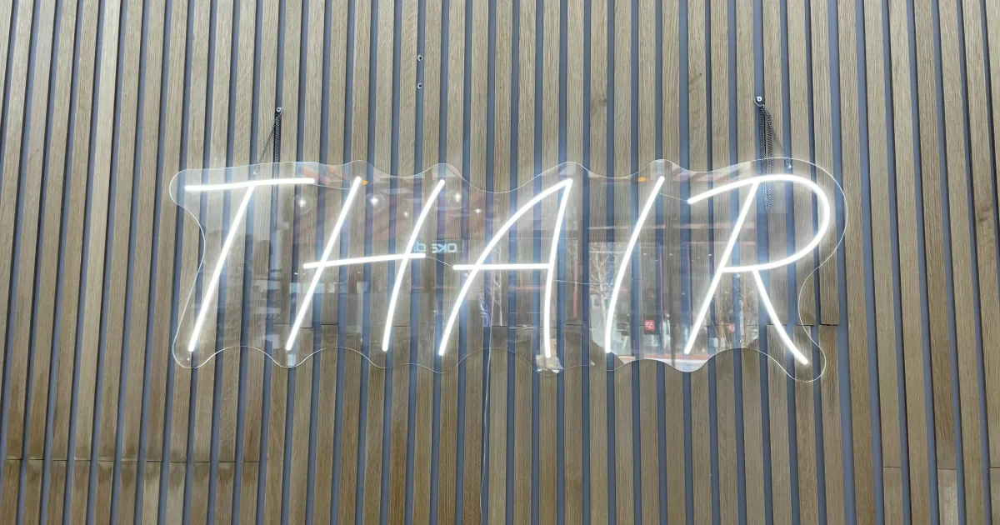

01Application Web · IA
Mesuria
Une application web qui automatise le calcul de mensurations corporelles à partir d’une image.
03 Projets
Trois réalisations qui illustrent mon intérêt pour le web, les données et les expériences utiles.
Sélection
Une sélection de mes projets GitHub.
Voir tous mes projets sur GitHub
01Application Web · IA
Une application web qui automatise le calcul de mensurations corporelles à partir d’une image.

02Site web
Un site web conçu pour présenter une activité dans l’univers de la coiffure.
Plateforme web
Un projet de site marchand associant interface, catalogue et base de données.
Projet phare · Mesuria
Mesuria répond à un besoin de mesure plus simple, en s’appuyant sur une application web et l’analyse d’images.
Collaboration